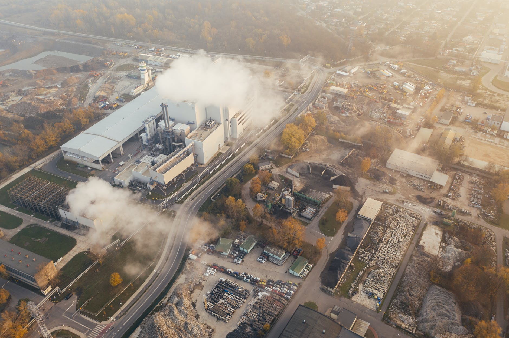
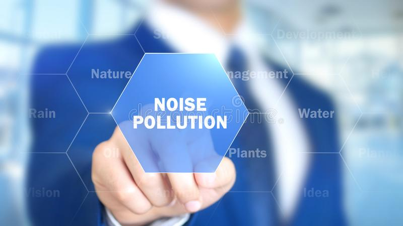
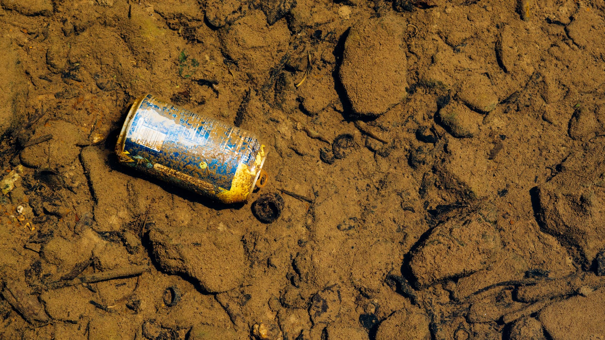
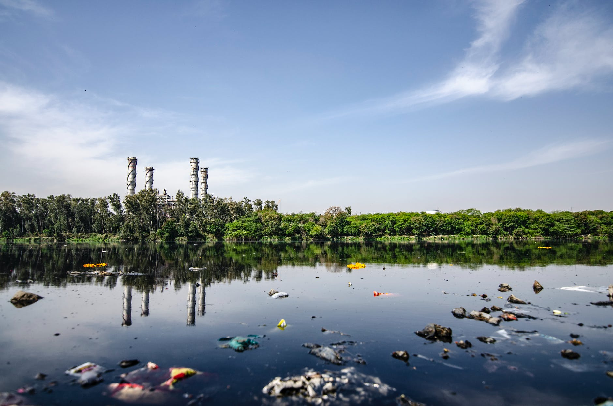
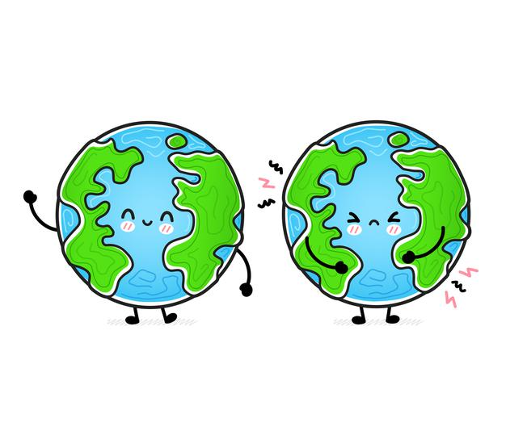

Earth's - Pollution!
Pollution is the introduction of contaminants into the natural environment that cause adverse change. Pollution can take the form of chemical substances or energy, such as noise, heat, or light. Pollutants, the components of pollution, can be either foreign substances/energies or naturally occurring contaminants.
Save Earth
- 
Air pollution is the presence of substances in the atmosphere that are harmful to the health of humans and other living beings, or cause damage to the climate or to materials.
Air Pollution - 
Noise pollution, also known as environmental noise or sound pollution, is the propagation of noise with ranging impacts on the activity of human or animal life, most of them harmful.
Noise Pollution - 
Soil contamination or soil pollution as part of land degradation is caused by the presence of xenobiotics chemicals or other alteration in the natural soil environment.
Soil Pollution - 
Water pollution is the contamination of water bodies, usually as a result of human activities. Water bodies include for example lakes, rivers, oceans, aquifers and groundwater.
Water Pollution - 
There is a Activity based on our daily usage of our works.
Happy Earth Vs Sad Earth